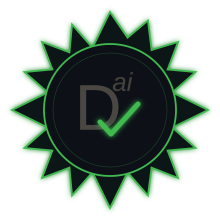

A manifesto for Human–AI collaborative software engineering.
Open · Versionable · CC BY 4.0
Modern AI coding agents are powerful — but stateless. Every new session starts from zero. No context. No history. No conventions.
Without a persistent shared context, teams lose the reasoning behind decisions, the migration history, the rules the AI should follow, and the ability to onboard anyone — human or agent — quickly.
"If it's not in a .md file, it doesn't exist."
Traditional answers — better comments, wikis, Confluence — don't work. They rot. They're invisible to AI. They're written after the fact.
Documentation-Driven Development makes documentation the executable contract of the project — before, during, and instead of conversations.
Standing on the shoulders of giants
Documentation-Driven Development is not a new idea. zsup defined it in 2014: "Write the documentation before writing the code. If you can't explain it clearly, you don't understand it yet."
This manifesto extends that foundation into the AI era. DDD v1 was about writing docs before code — spec-first, human-to-human. DDD v2 is about documentation as persistent, shared infrastructure for teams that include AI agents as first-class contributors.
In 2026, with AI agents in the loop, it's no longer optional. It's the missing infrastructure. No longer an intern task — it's now your core architecture!
A new discipline is emerging in AI-assisted development: Context Engineering — the practice of deliberately designing, structuring, and maintaining the information an AI agent needs to perform at its best.
DDD is Documental Engineering — applied to software teams.
Where Context Engineering describes the what (give the AI the right context), Documental Engineering describes the how:
| Context Engineering concept | DDD implementation |
|---|---|
| Persistent context across sessions | Versioned .md files committed in the repo |
| Structured knowledge base | .ai_context/ folder organized by domain |
| Role-specific information | specs-functional.md (PO) vs specs-technical.md (dev) |
| Behavioral rules and constraints | best-practices.md — always read first |
| Execution trace and auditability | DONE.md — written by the AI after each task |
| Context scoping | One subfolder per feature, migration, or domain |
The key insight is that context is not a prompt — it is infrastructure.
A one-shot prompt disappears after the session. A well-structured .ai_context/ folder
is permanent, versionable, shareable, and improvable. It turns ephemeral AI interactions into a
durable, compounding asset for the entire team.
Context Engineering asks: "what does the AI need to know?"
DDD answers: "Read the.mdfiles."
A DDD context document is not just any Markdown file.
Every .md in .ai_context/ must satisfy the 3S Rule:
| 3S | Principle | Meaning |
|---|---|---|
| Selected | Only what the agent needs | Don't dump everything — choose what is relevant. Noise kills context. |
| Synthetic | Summarised, not verbose | As short as possible while actionable. Distil, don't transcribe. |
| Structured | Formatted for AI consumption | Use headings, bullet points, tables, and code blocks. Structure is clarity. |
A document that is Selected, Synthetic, and Structured is a document the agent can actually use.
Everyone is in the loop — and the .md files connect them all.
Product Owner
│ defines specs and acceptance criteria in .md
▼
Developer
│ enriches .md with conventions, rules, constraints
▼
AI Agent
│ reads .md → executes → updates .md with what was done
▼
Developer / PO
│ reviews output → corrects .md → loops
└──────────────────────────────────────────────────────
The .md files play four roles simultaneously:
| Role | Description |
|---|---|
| 📋 Spec | What we want to build |
| 📜 Contract | The rules every contributor must follow |
| 📖 Journal | What was done, why, and how |
| 🔁 Reconstruction kit | Everything needed to rebuild from scratch |
Each step in steps/ is not just a roadmap milestone — it is a living retrospective unit.
When a step closes, the agent appends a compact retrospective directly into the step file:
what was done, what remains, what blocked.
Stored in dev-context.json under lastSession, it gives the next session
instant continuity without reading the entire history.
Not a ceremony. Not a meeting. Three lines committed in Git — and the agent remembers everything.
The .ai_context/ folder organises documentation into eight distinct types, each with a clear owner and lifecycle:
The agent's interaction contract. Profile (strict / standard / permissive), permissions, communication rules. Written once at init. Never reset.
The product vision and epic goals. Written once at init. Never reset. The strategic north star for every context and every step.
Roadmap phases and features — one file per milestone. Created at init, enriched over time. Never reset.
The current unit of work: title, description, todo list. The agent reads this first. Reset on every new context.
Functional specs: user stories, acceptance criteria, business rules. Reset on new context — except permanent-* files.
Architecture decisions, API contracts, migration steps, constraints. Reset on new context — except permanent-* files.
Execution reports written by the AI after each task: every change, every decision, every trade-off. Fully reset on new context. Git is the archive.
Reusable agent knowledge across all contexts: role, stack, conventions, architecture map. permanent-* files survive every context switch.
| Type | Owner | Lifecycle |
|---|---|---|
CONTRACT.md | Dev (init) | Permanent |
vision.md | Dev (init) | Permanent |
steps/ | Dev | Permanent |
CONTEXT.md | Dev | Reset on new context |
tasks/specification/ | PO | Reset (except permanent-*) |
tasks/technical/ | Dev | Reset (except permanent-*) |
tasks/done/ | AI | Fully reset |
skills/ | Dev | permanent-* kept, others reset |
DDD specs are Markdown — but some tasks demand more than text. For UI work, the AI can generate companion artefacts alongside the spec that make review faster and verification concrete.
*-preview.html
A self-contained HTML rendering of the UI component or page described in the spec.
The AI generates it alongside the .md — the developer opens it in a browser
to validate the visual intent before writing a single line of production code.
Example: tasks/specification/onboarding-wizard-preview.html
*-test.html
A lightweight test harness — also self-contained HTML — that the AI generates in
tasks/done/ after implementation to demonstrate that key acceptance criteria pass.
No test framework required: open in browser, read the output.
Example: tasks/done/onboarding-wizard-test.html
| Artefact | Location | Generated by | Purpose |
|---|---|---|---|
spec-*.md | tasks/specification/ | PO / Dev | Human-written intent |
spec-*-preview.html | tasks/specification/ | AI | Visual validation before coding |
done-*.md | tasks/done/ | AI | Execution report |
done-*-test.html | tasks/done/ | AI | Acceptance test runner |
The spec says what to build. The preview shows what it should look like. The test proves it works.
All three are Markdown-adjacent, versioned in Git, reviewed by the developer.
The permanent- prefix applies here too: a permanent- preview or test file
survives context resets and serves as a living reference for the feature.
skills/ Folder — Reusable Agent Knowledge
Beyond the context-specific documents (tasks/specification/, tasks/technical/, tasks/done/),
DDD introduces a dedicated folder for persistent, reusable knowledge:
the skills/ folder.
A skill is what the agent needs to know about how to work on this project — independently of what to do right now.
While tasks/ captures the current context (what to build, how it was done),
skills/ captures the stable knowledge that applies across all contexts:
| Folder | Contains | Lifecycle |
|---|---|---|
tasks/specification/ |
Functional specs for the current context | Reset on new context (except permanent-*) |
tasks/technical/ |
Technical decisions for the current context | Reset on new context (except permanent-*) |
tasks/done/ |
Execution reports written by the AI | Fully reset on new context |
skills/ |
Role, stack, conventions, domain expertise | Persists across all contexts (permanent-*) |
A skill document typically defines:
Who the agent should be. Senior dev, architect, PO-facing writer… Set the tone before writing a single line of code.
Languages, frameworks, forbidden libraries, build tools. What exists. What must not be introduced.
Naming, file structure, patterns to follow, patterns to avoid. The unwritten rules — now written.
The shape of the codebase. Where things live. What touches what. How to navigate without getting lost.
permanent- convention
Any file prefixed with permanent- in skills/ (or in specification/ and technical/)
is preserved when switching to a new context. Everything else is reset.
skills/ ├── permanent-dev-typescript.md ← survives all context switches ├── permanent-architecture.md ← survives all context switches └── onboarding-notes.md ← reset on next context switch
Skills are the agent's memory of who it is on this project. Documents are its memory of what it is doing right now.
In DDD, these three concepts are not separate layers — they are the same thing, expressed differently.
.md filesNot a database, not a chat history, not implicit model "memory". Every decision, convention, and trace lives in a versioned file — readable, editable, forkable. Explicit. Permanent.
Not a prompt you write before each session — a structured folder that already exists, reflects the current truth of the project, and is maintained by the team across every context switch.
The .ai_context/ folder doesn't just inform the agent — it constrains it. The agent knows its role, the rules, the history. It cannot drift. The context is the harness.
You don't prompt your way to a reliable agent. You harness it — with documentation.
Documental Engineering is the practice of treating the document layer as the primary engineering artifact — not the code, not the model, not the prompt.
The agent is a SEAL — a Self-Evolving Agent Learning system.
Not because its weights change, but because its harness does.
Every session adds to done/. Every correction sharpens a skill. Every new context builds on the accumulated knowledge of all previous ones.
Documental Engineering is the invisible infrastructure that makes the agent coherent, consistent, and trustworthy across every session. It doesn't appear in the output. It doesn't show up in the diff. But remove it — and the agent loses its memory, its identity, and its constraints in the very next session.
Documentation is the constant. The harness is a context.
The project must be fully reconstructible from its .md files alone.
If a new developer joins, or a new AI agent session starts, or the entire codebase is lost —
the .md files must contain enough information to:
Legends of the Future Past is a MUD (Multi-User Dungeon) that went offline and stayed dark for decades. In 2026, it came back — not because someone had the original server code, but because the structured text files describing the world had survived: zones, characters, rules, quests, lore.
The executable was gone. The documentation was not. The game was rebuilt from its data files alone.
This is the ultimate demonstration of the Reconstruction Guarantee.
In software engineering, your .md files are those data files.
The codebase can be rewritten. The context — decisions, conventions, architecture — cannot be recovered if it was never written down.
Code is temporary. Documentation is permanent.
Two independent research groups — Microsoft Research and Google DeepMind — have published findings in 2026 that, taken together, provide a rigorous scientific foundation for DDD. Neither paper mentions DDD. Both describe exactly what DDD implements.
In April 2026, Philippe Laban, Tobias Schnabel and Jennifer Neville published "LLMs Corrupt Your Documents When You Delegate." Their DELEGATE-52 benchmark tested 19 models across 52 documents and 20 interactions each.
| Condition | Degradation after 20 interactions |
|---|---|
| Top-tier frontier models | ~25% of content corrupted |
| Average across 19 models | ~50% of content corrupted |
| At 100 interactions | No plateau — monotonic decline |
| With agentic tool use | +6% additional degradation |
| Python code (verifiable domain) | 98%+ accuracy — the only domain that held |
The corruption is silent — not gibberish, but small confident changes: a detail shifted, a qualification dropped, an emphasis altered. Invisible on a quick scan. Compounding over time.
"When you delegate document maintenance to an LLM, the theory dies twice. First: you didn't build the understanding, because you delegated. Second: the LLM silently corrupted the artifact itself."
— Christian Ekrem, connecting the research to Peter Naur's 1985 theory of programming
| Risk (DELEGATE-52) | DDD architectural response |
|---|---|
| LLMs corrupt documents when asked to update them | The AI only adds new files in done/ — never modifies existing docs |
| Errors compound over multiple interactions | Each context starts clean — done/ is fully reset |
| Agentic setups make corruption worse | Developer reviews and commits every change — no silent writes |
| Short-term performance hides long-term decay | Git tracks every change — corruption is detectable and reversible |
| You lose both document and mental model | skills/permanent-* are human-written, never AI-modified |
The documents are not the AI's to modify. They are the team's to maintain.
The AI's job is to execute — and to report.
Researchers at Google DeepMind (Tomašev, Franklin, Osindero) argue that as AI agents begin delegating tasks to other agents and to humans, formal systems for authority, accountability and verification are required to prevent systemic risk.
Their five requirements for safe AI delegation:
DDD already implements all five — not with a new infrastructure, but with existing primitives:
| DeepMind requirement | DDD implementation |
|---|---|
| Authority definition | CONTRACT.md — strict / standard / permissive profile |
| Task assignment & scope | dev-context.json — title, description, todos, steps |
| Process-level monitoring | tasks/specification/ → spec validated before execution |
| Verifiable task completion | tasks/done/*.md — execution report written by the AI |
| Audit trail | Git history — every change committed alongside its context |
| Human-in-the-loop for high-risk tasks | Developer reviews and commits — no silent writes |
| Privilege attenuation | CONTRACT.md profile scopes agent permissions per project |
| Verifiable task completion (machine-level) | Vouch — obligation IDs, evidence, release gate |
"Without verifiable delegation protocols, large-scale multi-agent systems in high-stakes domains could amplify failures and obscure responsibility."
— DeepMind, arXiv 2026
The paper is conceptual (no benchmarks yet). But its framing of delegation as a governance and risk-management challenge — not a prompt-engineering problem — maps precisely onto what DDD practitioners already know from practice.
Two labs. One conclusion.
Microsoft Research proves that delegating document maintenance to AI corrupts the artifact.
Google DeepMind proves that delegating tasks to AI without formal authority and accountability creates systemic risk.
DDD's answer to both: humans write the context, humans assign the task, humans review the output, Git tracks everything.
DDD does not exist in isolation. Two emerging reference points confirm and sharpen its approach from different angles.
The GitAgent Protocol formalises how AI agents interact with Git repositories: structured file conventions, agent manifests, and task coordination through versioned files. The core premise mirrors DDD exactly — Git is not just version control, it is the communication bus between agents and humans.
Where GitAgent Protocol defines the machine-readable layer (agent manifests, structured metadata),
DDD provides the human-readable layer: the .md files that describe intent, conventions,
and decisions in a form that both humans and agents can read, write, and reason about.
DDD and GitAgent Protocol are complementary: DDD is the discipline, GitAgent is a formalisation of the protocol beneath it. A DDD repository is a natural GitAgent-compatible workspace.
This article argues that Markdown as AI output format is problematic: agents generate Markdown for chat interfaces where it renders as prose, creating an illusion of structure that collapses the moment you try to parse, verify, or act on it programmatically.
DDD's position is the inverse — and it matters to understand why.
In DDD, Markdown is not agent output. It is human input.
Developers and POs write the .md files. The agent reads them.
The agent's output in done/ is explicitly reviewed and committed by a human
before it enters the context.
| Pattern | Who writes | Who reads | Problem? |
|---|---|---|---|
| AI chat output as Markdown | Agent | Human (in chat) | Yes — unstructured, unparseable, volatile |
DDD context files (.ai_context/) | Human | Agent | No — human-authored, structured, versioned |
DDD done/ reports | Agent | Human + Agent | Reviewed — human commits what matters |
The problem is not Markdown. The problem is who writes it, and whether it is reviewed.
DDD solves both: humans write the context, humans review the output.
Vouch takes human-owned intent (YAML) and compiles it into typed obligation IDs, runs evidence collection (tests, SARIF, audit logs), and operates a release gate: block | escalate | canary | auto_merge.
Their positioning: "Use Vouch when a risky AI-authored change needs more than 'CI passed.'"
That sentence describes exactly the end of every DDD task cycle. DDD and Vouch are complementary layers of the same pipeline:
DDD spec (.md) → Agent reads → Agent executes
→ done/*.md + code changes
→ Vouch compiles obligations
→ evidence (tests, SARIF, audit)
→ gate: block | escalate | auto_merge
| Layer | Tool | What it does |
|---|---|---|
| Input harness | DDD .ai_context/ | Structures what the agent reads and how it works |
| Output gate | Vouch | Verifies what the agent produced, with obligation IDs |
DDD is the context contract — the input.
Vouch is the release contract — the output gate.
Together: a fully auditable, human-owned, machine-verifiable AI development pipeline.
DDD is not tied to any language, framework, or toolchain. The .md files describe
intent, rules, and context — not syntax. The same approach works
whether your stack is Angular, React, Spring Boot, Django, Rust, or anything else.
When you migrate from one framework to another, the documentation survives the migration. Only the code changes.
Your .md files will still be valid the day you switch to a framework that doesn't exist yet.
Plain Markdown, committed alongside the code — infinitely portable:
.ai_context/ folder.No vendor lock-in. No proprietary format. No special tooling required.
DDD does not care which AI agent sits in your IDE. It works with any agent that can read a file.
All you need is a high-IQ, adaptive, and comprehensive AI agent with a clear view of the project in an instant. Not an inflexible corporate co-worker who has attended every stand-up and memorised every meeting memo.
Any agent is expandable.
DDD documentation is living documentation — it evolves with the project. Every correction makes the next AI session smarter:
| Event | DDD Response |
|---|---|
| New framework version | Update migration-xxx.md, execute, update MIGRATION_DONE.md |
| Convention changed | Update best-practices.md, commit |
| New architectural constraint | Add entry in docs/, reference it in best-practices.md |
| AI produced something wrong | Correct the .md, re-run — the error won't happen again |
Every session improves the next one.
In traditional software engineering, the intellectual property of a project lives in its code. In DDD, this assumption is inverted.
The real intellectual property is the documentation.
The code is an artifact — a snapshot of one implementation, in one language, at one point in time. It can be rewritten, refactored, or replaced entirely. It frequently is.
The .md files encode something the code never can:
This is Knowledge Capital — the compounding intellectual asset of the team.
It grows with every session, every correction, every new .md entry.
Unlike code, it does not become legacy. It becomes richer.
A team that loses its codebase can rebuild.
A team that loses its Knowledge Capital starts from zero.
Current open-source licenses — MIT, Apache, GPL, CC BY — were designed for artifacts: files that exist at a point in time. DDD documentation is not an artifact. It is a living, compounding context — closer to a methodology, a knowledge base, and a collaborative memory than a static file.
We propose the concept of a Living Knowledge License:
| Traditional license assumes… | Living Knowledge License assumes… |
|---|---|
| The value is in the artifact | The value is in the accumulated context |
| A copy is equivalent to the original | A fork diverges and must be maintained separately |
| Authorship is a moment in time | Authorship is a continuous, multi-agent contribution |
| The license governs distribution | The license governs contribution, attribution, and evolution |
This is not a formal legal license — yet. It is a call for the open-source community to recognize that AI-assisted, documentation-driven projects represent a new category of intellectual property that existing licenses were not designed to protect or govern.
Open questions for the community
.md is co-authored by a dev, a PO, and an AI?The code belongs to the license.
The context belongs to the team.
We need a license that understands the difference.
Organize documentation by context, each in its own versioned subfolder:
.ai_context/
├── README.md ← project overview for the agent (permanent)
├── CONTRACT.md ← agent interaction rules (permanent)
├── CONTEXT.md ← current context: title, description, todo list
├── dev-context.json ← machine-readable context metadata
├── vision.md ← product vision and epic goals (permanent)
├── history.json ← past contexts journal (JSON Lines, permanent)
├── steps/ ← roadmap phases and features (permanent)
│ └── phase1-core.md ← milestone description
├── skills/ ← reusable agent knowledge (permanent-* kept)
│ ├── permanent-dev-stack.md ← role, stack, conventions
│ └── permanent-architecture.md ← codebase map
└── tasks/
├── done/ ← AI execution reports (reset on new context)
├── specification/ ← functional specs (permanent-* kept)
└── technical/ ← technical decisions (permanent-* kept)
In each feature subfolder, create a specs-functional.md.
This is PO territory — written in business language, no code:
user stories, acceptance criteria, business rules, edge cases, links to mockups.
In the same subfolder, create a specs-technical.md.
This is dev territory:
architecture decisions, API contracts, data models, component structure,
dependencies, constraints, references to docs/*.md.
best-practices.mdGlobal rules the AI must follow on every task — naming conventions, coding patterns, what to avoid, which libraries to use. This file is always read first.
Frame your prompt exactly like a Jira / Linear / GitHub issue — or a personal note.
The format doesn't matter. What matters is that the prompt references the .md files:
As a [role], I want [feature] so that [outcome]. Acceptance criteria: - [ ] ... - [ ] ... Technical context: see .ai_context/features/authentication/specs-technical.md Rules to follow: see .ai_context/best-practices.md
Ask the AI agent to:
specs-functional.md and specs-technical.mdbest-practices.mdDONE.md with every change, decision, and trade-offCommit .md files alongside the code. Every commit is a versioned snapshot of both the code and its context:
feat(auth): implement login flow See .ai_context/features/authentication/DONE.md for full execution report.
DDD's primary interface is your IDE and its built-in AI agent — not a chat window, not an external platform.
The .md files live in the repo. The AI agent lives in the IDE. The developer stays in flow.
.ai_context/ (in repo)
│
▼ attached / referenced by the developer
IDE Agent (Copilot · JetBrains AI · Cursor · Windsurf…)
│
▼ reads context → executes → updates .md
Code + updated DONE.md
│
▼ reviewed and committed by the developer
Git — versioned snapshot of code AND context
This is a local, zero-dependency, agent-agnostic workflow that works with any IDE and any AI agent — today, without any additional tooling. MCP and external context servers are valid extensions for advanced use cases, but they are not required.
DDD works today with any IDE. The next step is native IDE support — plugins that make DDD a first-class citizen of the development environment.
IntelliJ · WebStorm · Rider…
.ai_context/ in the project.md files into the JetBrains AI context automaticallyCopilot · Cursor · Continue · Cline…
.cursorrules, CLAUDE.md, COPILOT_INSTRUCTIONS.md from best-practices.mdDDD: New feature contextDDD: New migration plan · DDD: View DONE.md| Approach | Context delivery | Session persistence | Vendor lock-in |
|---|---|---|---|
| Copy-paste to chat | Manual, per session | None | High |
| MCP server | Automated, external | Partial | Medium |
| DDD + IDE plugin | Automated, local | Full (committed) | None |
The plugin eliminates the only remaining friction in DDD: manually attaching files to the agent context. With the plugin, the context is always ready — because it lives in the repo.
🔭 What's Next — Conversation-to-Document
The DDD loop still has one blind spot: the conversation itself. Every session with an AI agent produces decisions, discoveries, and trade-offs. Today, they vanish when the session closes.
The next plugin feature: read the current conversation and propose a structured .md draft —
extracted decisions, new rules, execution notes — that the developer reviews, adjusts, and commits.
| Principle | Rationale |
|---|---|
| Extract, don't dump | A raw transcript is noise. Only what deserves to be permanent is proposed. |
| Propose, don't auto-commit | The human validates what enters the .md. No silent writes. |
.md first, not vector memory | The output is editable Markdown — versionable, auditable, agent-readable. |
The conversation is the raw material. The plugin proposes. The developer decides what becomes documentation.
Two technologies are often mentioned alongside DDD: MCP (Model Context Protocol) and contextual memory tools. Here's how they relate — and when they matter.
The content layer. Structured, versioned, explicit knowledge — committed in Git alongside the code.
✅ Works everywhere
✅ Versionable
✅ Team-wide
✅ Auditable
The transport layer. Automates injection of your .ai_context/ into the agent — no manual attachment needed.
✅ Multi-agent setups
✅ Shared team context
⚠️ Requires infrastructure
⚠️ Not needed for solo dev
Mem0, Zep, Memoir… Versioned or implicit memory stored outside Git.
⚠️ Requires infrastructure
⚠️ Agent-written (corruption risk)
⚠️ Incompatible with Copilot
⚠️ Marginal value with DDD
Memoir is a high-performance semantic memory system for AI agents that replaces opaque vector databases with Git-like versioned memory: branch, commit, merge, rollback, cryptographic integrity, semantic paths instead of UUID keys.
Their core diagnosis is our thesis, word for word:
"AI memory is a global variable anti-pattern. Your agent's memory is code without version control. One bad session poisons every future retrieval."
The fact that Memoir had to build "Git for AI memory" to solve memory drift is the strongest possible confirmation that the right mental model for agent memory is version control. DDD practitioners just skipped the infrastructure and used the one that already exists.
| Dimension | Memoir | DDD |
|---|---|---|
| Versioning | Cryptographic, semantic paths | Plain Git |
| Authorship | Agent-written, auto-aggregated | Human-written, human-reviewed |
| Portability | memoir-ai.dev infrastructure | Zero — any Git repo |
| Agent compatibility | memoir-compatible agents only | Any agent that can read a file |
| Corruption risk | Mitigated by rollback | Prevented by human review gate |
🧪 Working Hypothesis
If you practice DDD correctly, you don't need a contextual memory layer.
A well-maintained .ai_context/ folder is a strictly superior alternative:
explicit, versionable, auditable, and infrastructure-free.
Apply this test before reaching for a memory tool:
If it's important enough for the agent to remember, it's important enough to be in a .md file.
| Dimension | DDD (.ai_context/) |
Memoir (versioned memory) | Memory tools (Mem0, Zep…) |
|---|---|---|---|
| What is stored | Structured rules, specs, decisions | Semantic agent memory (versioned) | Implicit facts, conversation history |
| Who writes it | Humans — deliberately | Agent — auto-aggregated | Agent — automatically |
| Versionable | ✅ Plain Git | ✅ Cryptographic | ❌ Opaque vector store |
| Human-readable | ✅ Plain Markdown | ⚠️ Semantic paths | ❌ Embeddings |
| Works with GitHub Copilot | ✅ Yes | ❌ memoir-compatible only | ❌ Closed environment |
| Infrastructure cost | Zero | memoir-ai.dev service | Vector DB + embeddings, always-on |
| Corruption prevention | Human review + Git commit | Rollback after the fact | None |
DDD is free, open, and will stay that way. If it saved you time, improved your workflow, or sparked a conversation in your team — consider buying us a coffee. ☕
Every contribution helps us maintain the manifesto, grow the community, and work toward the Living Knowledge License.
Does your organization want to demonstrate a genuine commitment to Documentation-Driven Development? The Documentation First Certification is a structured audit and recognition program for teams and companies that have adopted DDD practices.

The AI Documentation First badge
displayed on your GitHub repo, website, and job postings.
A structured review of your .ai_context/ folder, your DDD loop, and your team's practices by a certified DDD reviewer.
A digital badge for your GitHub repo and documentation, with a verification link proving authenticity.
DDD does not exist in a vacuum. Below are projects, articles, and references that share its concerns — context persistence, agent harnessing, memory architecture, and dev tooling. Organised by the three axes that matter: Harness, Memory, Dev Environment.
Formalises how AI agents interact with Git repos: structured file conventions, agent manifests, task coordination through versioned files. DDD is the human layer on top of this machine-readable protocol.
"A compiler for release contracts." Takes human-owned intent (YAML) → obligation IDs → evidence (tests, SARIF, audit) → release gate: block / escalate / canary / auto_merge. DDD is the input harness. Vouch is the output gate.
An open-source context database for AI Agents. Unifies management of context — memory, resources, and skills — through a file system paradigm, enabling hierarchical context delivery and self-evolving agents. Conceptually very close to .ai_context/.
Provides persistent, structured memory for coding agents. Replaces messy markdown plans with a dependency-aware graph, allowing agents to handle long-horizon tasks without losing context. The graph approach vs. DDD's flat folder — a complementary design space.
Captures every coding-agent interaction in your org as a structured trace, codifies repeated patterns into reusable skills, and propagates those skills to every agent on the team. The team-level equivalent of DDD's skills/ folder — but automated and shared.
A 5-month experiment shipping a real product with zero manually written code. 3 engineers, ~1 500 PRs, ~1M lines — all by Codex. The key lesson: replace one big AGENTS.md with a structured docs/ tree as a table of contents.
"Git for AI Memory." Replaces opaque vector databases with versioned, cryptographically secure semantic memory: branch, commit, merge, rollback. Their diagnosis — "AI memory is a global variable anti-pattern" — is our thesis, word for word.
Stores conversation history as verbatim text and retrieves with semantic search. No summarisation, no paraphrasing. Structured like a palace: people and projects become wings, topics become rooms, content lives in drawers. Searches can be scoped, not run against a flat corpus.
Embeds each conversation turn as a semantic vector, then queries a memory graph via cosine similarity to find related entries. Optionally uses a memory sideagent to verify relevance before injecting into the conversation. A fine-grained take on retrieval-augmented context.
A clear breakdown of Retrieval-Augmented Generation vs. Context-Augmented Generation for LLM memory architecture. Essential reading for understanding where DDD's explicit, versioned context layer sits in the broader memory design space.
"Analyse your AI coding assistant usage — any harness, one dashboard." Observability for AI-assisted development: track what your agents actually do, where they help, and where context breaks down. Pairs naturally with a DDD project as the measurement layer.
Anthropic's official best practices for Claude Code. Covers how to structure instructions, manage context, and guide the agent effectively. Essential reading — and a natural counterpart to your CONTRACT.md and skills/ files.
CLAUDE.md DirectoryAnthropic's specification for the CLAUDE.md file — the project-level instruction file Claude reads at session start. Functionally equivalent to DDD's skills/permanent-*.md. If you use Claude Code, your DDD context maps directly onto this.
Argues that Markdown as AI output format is unstructured and unparseable. DDD's position is the inverse: Markdown as human input and versioned context — not agent output — is exactly the right tool. The distinction matters.
The original DDD definition: "Write the documentation before writing the code. If you can't explain it clearly, you don't understand it yet." DDD v2 builds on this foundation for the AI era.
Laban, Schnabel, Neville — "LLMs Corrupt Your Documents When You Delegate." 19 models, 52 documents, 20 interactions each. Top models: ~25% corruption. Average: ~50%. No plateau. The scientific foundation for DDD's human-review gate. Commentary →
Tomašev, Franklin, Osindero — formal systems for authority, accountability, and verification in AI delegation. Their five requirements for safe AI delegation are implemented by DDD using plain Git primitives.
A MUD from 1992 rebuilt from its data files alone — the original server code was gone but the structured world files survived. The real-world proof of the DDD Reconstruction Guarantee.